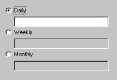

(control [, control ... ] [, horz:])
Creates a radio button for each control. Each control must have a "label" member. Only the control for the selected radio button is active, all the other controls are disabled.
If horz: is specified then the controls will be laid out
horizontally instead of vertically.
For example:
RadioGroupsControl( #(Field label: Daily) #(Field label: Weekly) #(Field label: Monthly))
Which will produce something like:
Note: The controls can be composed of multiple controls. (e.g. Horz, Vert, Form)
See also: RadioButtonsControl,